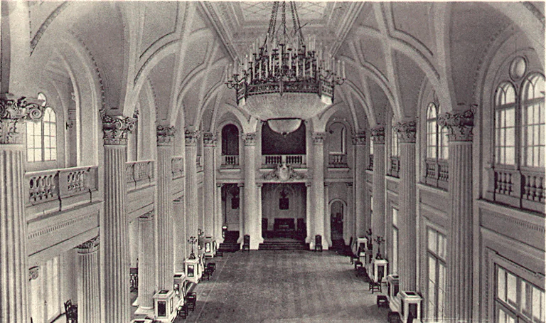
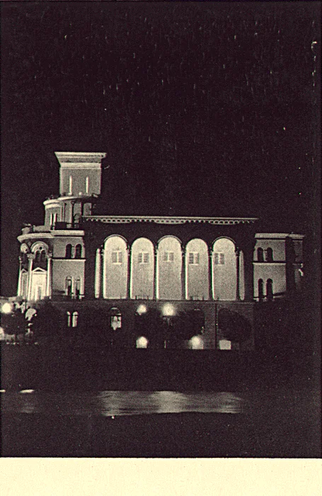
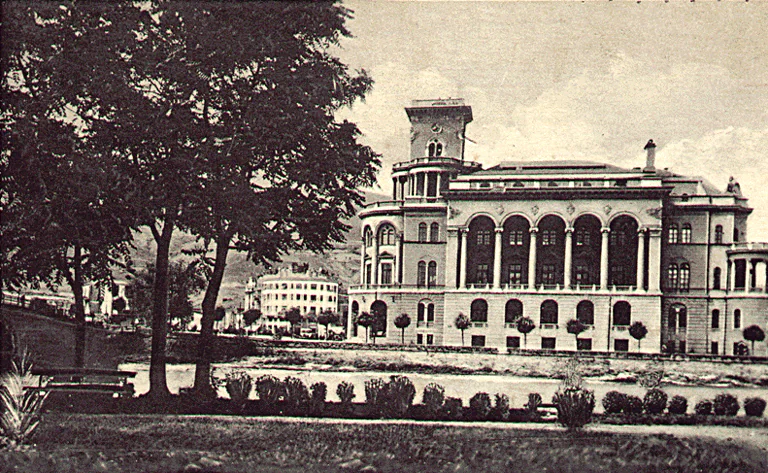
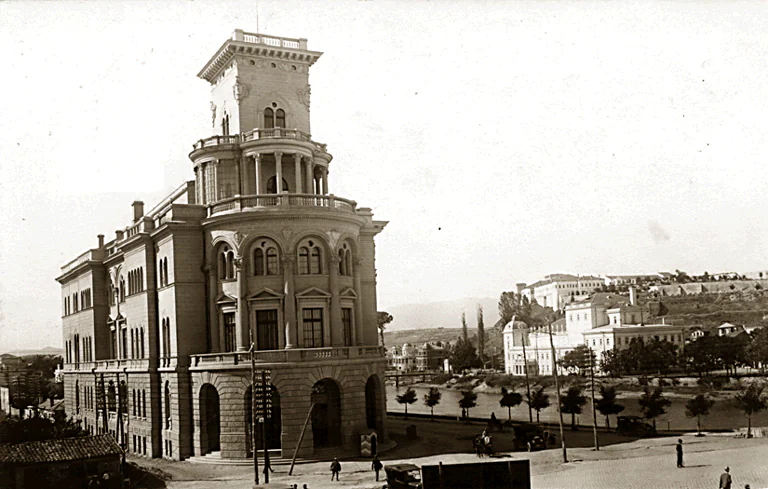
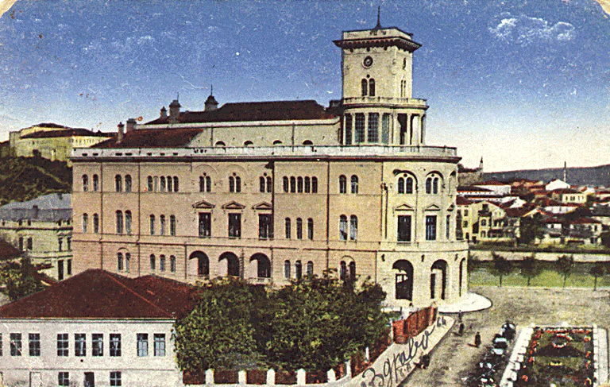
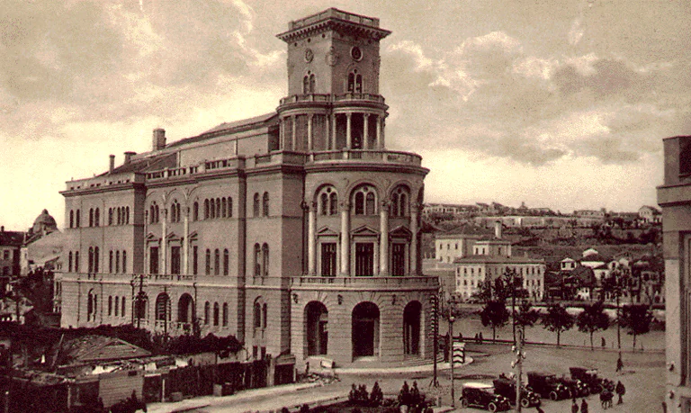
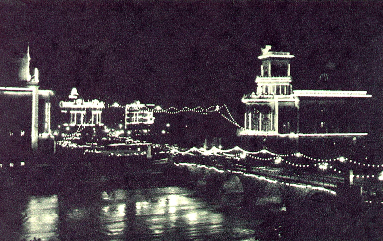
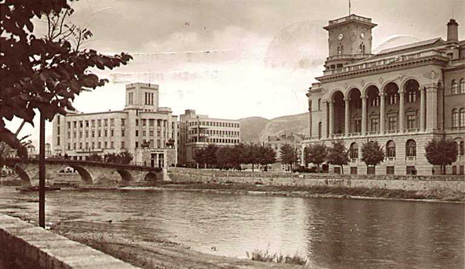
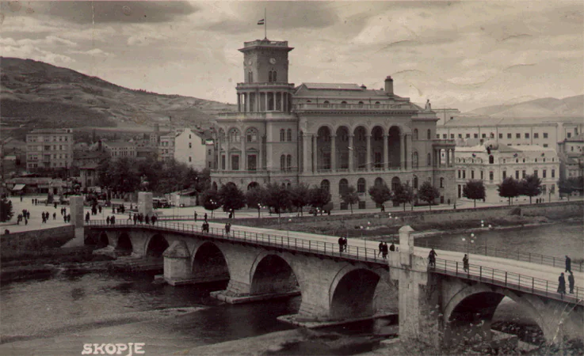
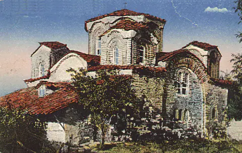

Покрај реката Вардар 1
- Производство
- УФУЖ и Документарен филм Прага
- Сценарио и режија
- Славко Јаневски и EMAN CANERA
- Година
- 1959
- Должина
- 00:26

На десната страна од р.Вардар, веднаш до Камениот мост, не некогашното место на Бурмали џамија се наоѓал објектот Офицерски дом. Изграден во периодот од 1926 - 1929 година, по проектот на архитектот Вилием Баугартен. Објектот е третиран во стил на класичниот академизам, особено во третманот на фасадата со колосалните столбови и изработката на прозорските отвори. Над главниот влез са наоѓала кула, на која на сите четири страни биле инсталирани часовници

Свечана сала во Офицерскиот дом, каде се одржувале балови. На чело на салата се гледа галеријата. Салата била украсена со прекрасни кристални лустери и вѕидани коринтски столбови и лоџии на прозорите

Влезот во свечената сала на Офицерскиот дом. Лево и десно скалите се украсени со метални свеќници, а таванот бил рељефно украсен.

Офицерски дом - ноќе - 20-тите години.

Офицерски дом - 20-тите години.

Офицерски дом - 20-тите години.

Камениот мост и Офицерски дом - 20-тите години.

Офицерски дом - 20-тите години.

Малото плоштадче, од левата страна на р.Вардар, со дел од шеталиштето. Во позадина е Камениот мост и Офицерскиот дом - 20-тите години.

Офицерски дом - 20-тите години.

Офицерски дом - 20-тите години.

Офицерски дом - 20-тите години.
Офицерски дом - 20-тите години.

Офицерски дом. Во позадина се гледа Народниот театар и дел од скопската тврдина - Кале.

Офицерски дом - 20-тите години.

Офицерски дом - 20-тите години.

Офицерски дом и плоштадот "Македонија" - 20-тите години.

Офицерски дом и дел од плоштадот "Македонија". Во позадината се гледа Народниот театар и дел од скопската тврдина - Кале - 20-тите години.

Офицерски дом и дел од плоштадот "Македонија". Во позадината се гледа Народниот театар и дел од скопската тврдина - Кале - 20-тите години.

Офицерски дом - 20-тите години.

Офицерски дом - 20-тите години.

Народната банка со Офицерски дом и Камениот мост. Фотографијата е снимена од левата страна на р.Вардар, од малиот плоштад, каде било стојалиште на пајтоните. (30-тите години)

Дел од плоштадот со Офицерски дом - 30-тите години.

Офицерскиот дом со Народната банка - 30-тите години.

Офицерскиот дом, Народната банка, Камениот мост и плоштадот "Македонија" - ноќе - 30-тите години.

Офицерскиот дом со Народната банка - 30-тите години.

Офицерскиот дом со Народната банка - 30-тите години.

Офицерскиот дом - 30-тите години.

Офицерскиот дом на 26 јули 1963 година.

 Аквадукт4 разгледници
Аквадукт4 разгледници Кале30 разгледници
Кале30 разгледници Мостови60 разгледници
Мостови60 разгледници Кеј58 разгледници
Кеј58 разгледници Плоштад46 разгледници
Плоштад46 разгледници Објекти66 разгледници
Објекти66 разгледници
Христијански храмови19 разгледници Муслимански објекти33 разгледници
Муслимански објекти33 разгледници Офицерски дом29 разгледници
Офицерски дом29 разгледници Театар28 разгледници
Театар28 разгледници Железничка станица13 разгледници
Железничка станица13 разгледници Училишта36 разгледници
Училишта36 разгледници Паркови12 разгледници
Паркови12 разгледници Пазари18 разгледници
Пазари18 разгледници Улици38 разгледници
Улици38 разгледници Панорама I60 разгледници
Панорама I60 разгледници Панорама II30 разгледници
Панорама II30 разгледници Колажи55 разгледници
Колажи55 разгледници Поплави9 разгледници
Поплави9 разгледници Земјотрес27 разгледници
Земјотрес27 разгледници Скопје 200026 разгледници
Скопје 200026 разгледници